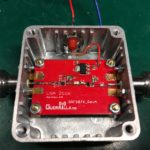21 cm band, also known as the Hydrogen line, is one of the important bands in radio astronomy.
Please read this Wikipedia article if you not familiar with the Hydrogen line.
Nowadays, even radio amateurs can observe this signal from outer space, thanks to modern hardware.
One of the most important parts of any receiver is the antenna and input stage. Typically, the input stage is amplified with extremely low noise and high gain due to the space signals’ weakness.
In this article, I want to describe a simple and cheap amplifier for the receiver’s first stage.
This amplifier is a part of my DIY radio telescope project.
Please watch these intro videos from the last year.
In the following article, you can read more about this antenna.
But now, let’s see how to build the first stage LNA (low noise amplifier).
This amplifier is a two-stage device with a high pass filter.
As a first stage amplifier, I’m using GRF2071 from Guerilla RF.
Thank you guys from Guerilla (Eugene Proenza, Alan Ake, Frank Nicosia, and others) for the great technical and information support.
Components surrounding the GRF chip (caps and inductors) was selected for the best performance at 1400 MHz.
Here is the frequency response of this part
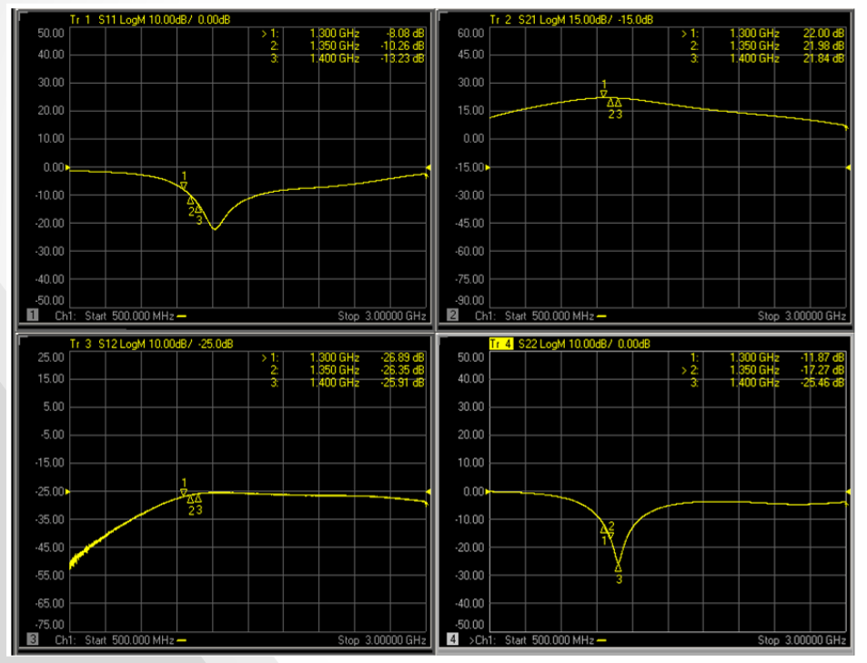I’m using an HFCN-1200 high pass filter between amplifier stages, reducing unwanted low frequencies and determining all devices’ frequency response.
{kind=link}
Filter frequency response:
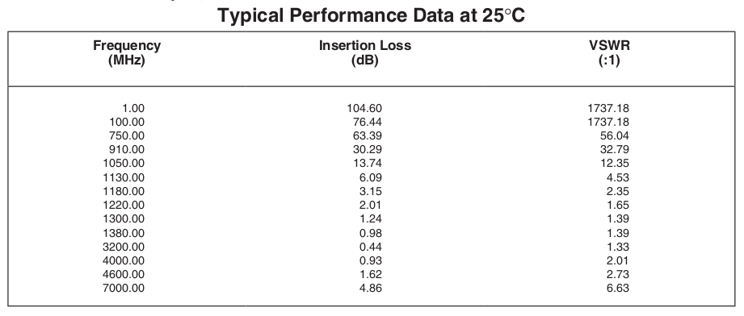The second stage of the LNA performs additional line amplification of the signal (which is a little bit attenuated by the HP filter) before sending it to the feeder. This part is based on the popular SPF5043Z IC.
{kind=link}
A full schematic of the LNA:
{kind=link}
The total theoretical gain and noise figure of the whole LNA can be calculated using this very nice tool: https://www.pasternack.com/t-calculator-noise-figure.aspx
For my schematic, I got these values:
Total Noise Figure: 0.3052 dB
Total Gain: 38.00 dB
which is very good! 🙂
Of course, real-world devices can’t get such characteristics due to many reasons, but real params should be very close to the theoretical, and that’s great.
LNA board, arrangement on the two-layers PCB:
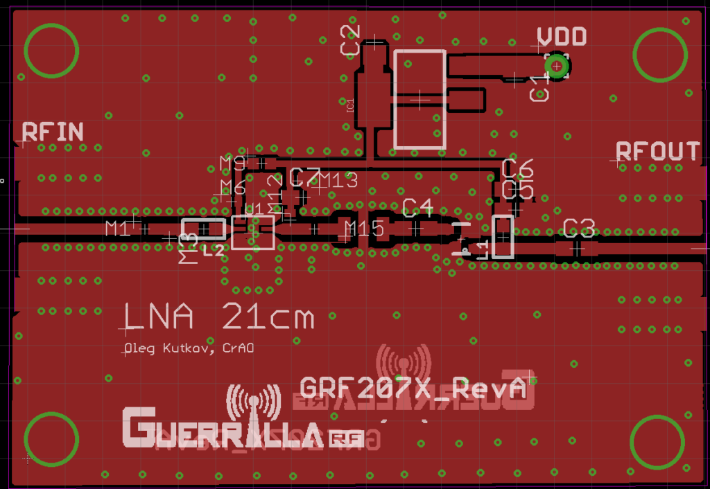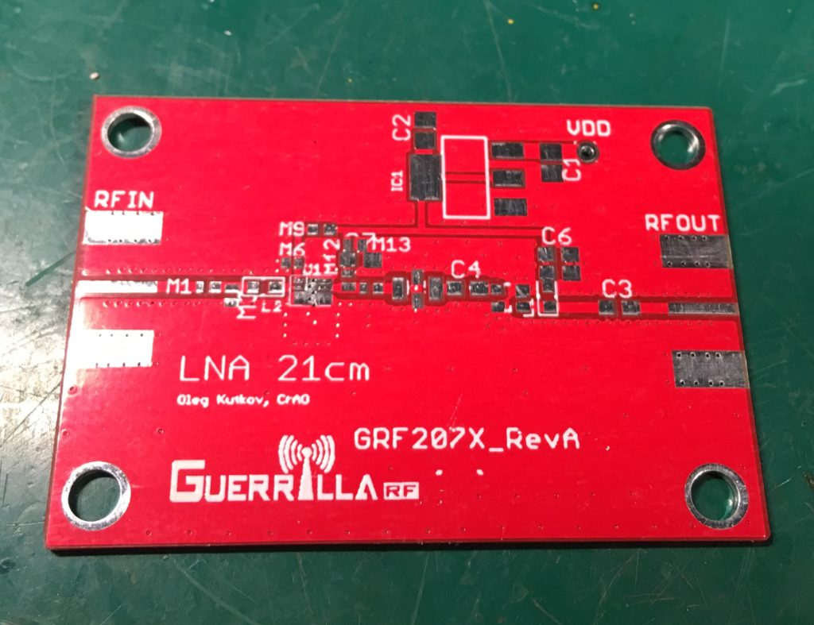Under the GRF device is very important to place a thermal pad without a solder mask.
{kind=link}
{kind=link}
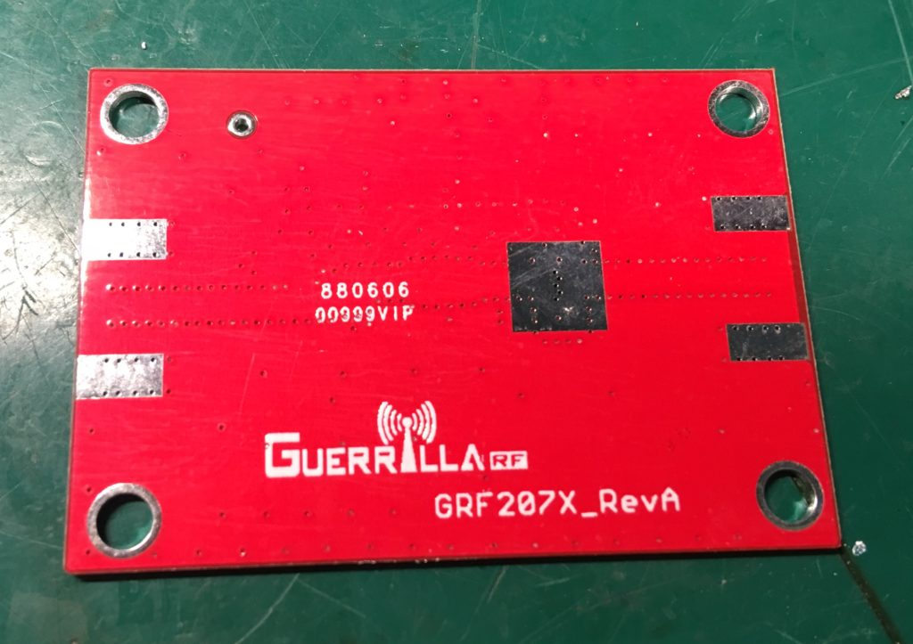And finished board:
{kind=link}
{kind=link}
Please contact me if you wish to get Eagle project files.
The whole board was placed inside the metal box, which was hermetically sealed. As the input and output connectors, I’m using the N-type connectors bolted to the case. The power delivery is used a 4700 pF feedthrough capacitor. The optimal supply voltage is 6-9 volts.
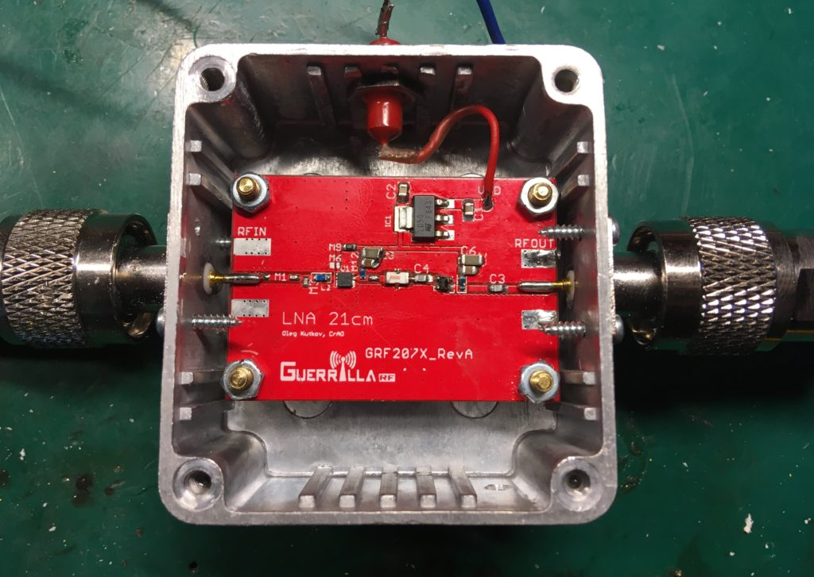 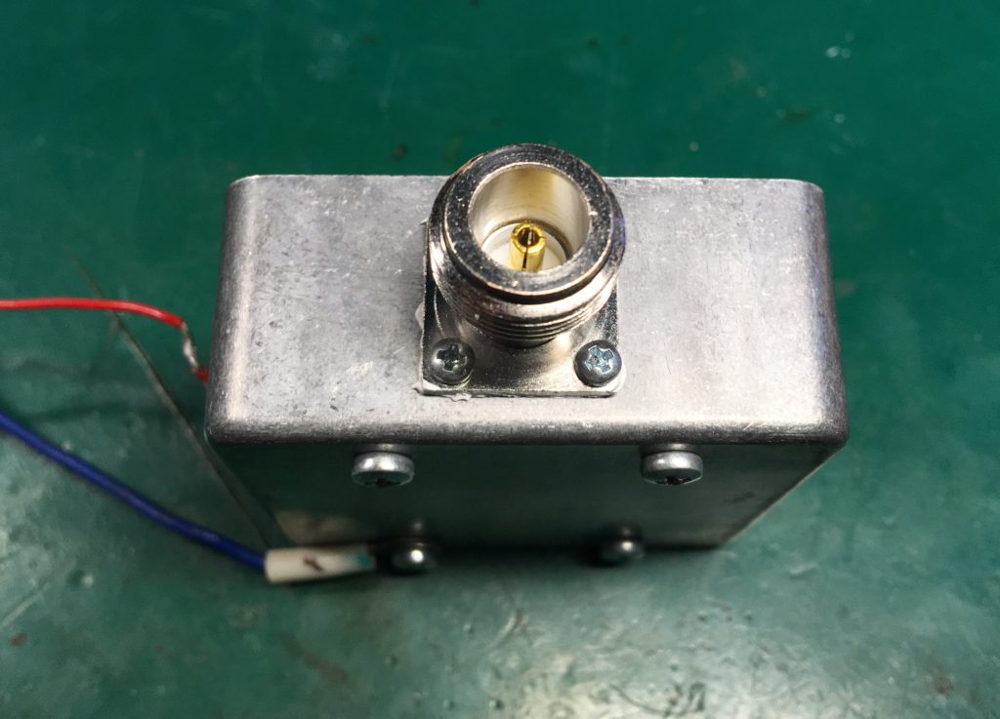 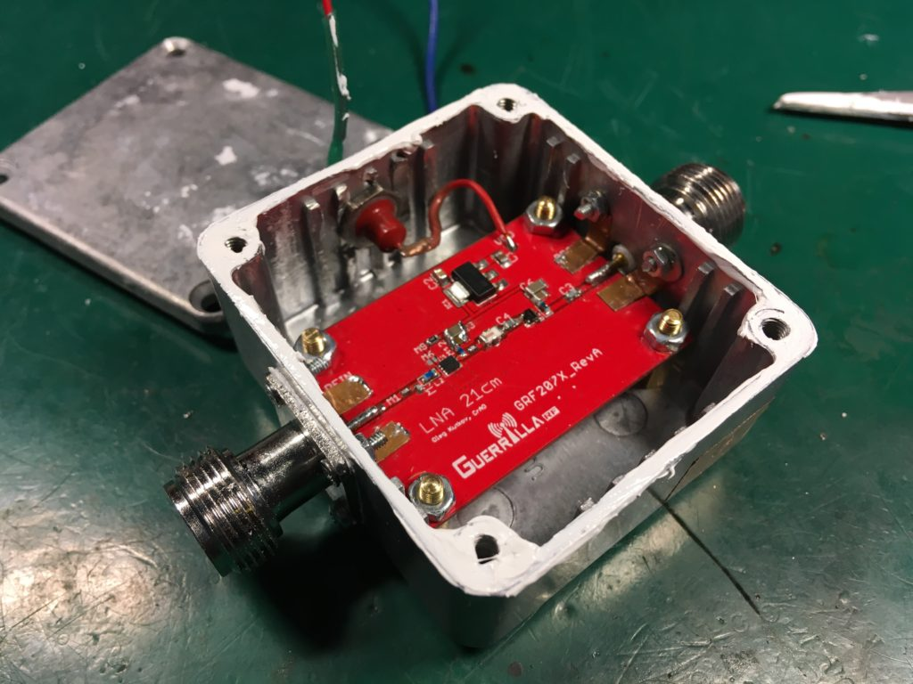Low impedance path for the high freq currents:
{kind=link}
{kind=link}
{kind=link}
{kind=link}
LNA noise very depends on the system’s total temperature. So it’s always a good idea to cool the device.
For the cooling purpose, I’m using Peltier and cooling system (radiator + fan). To get better performance, I put the whole construction inside the aluminum can be surrounded by the thick layer of foam.
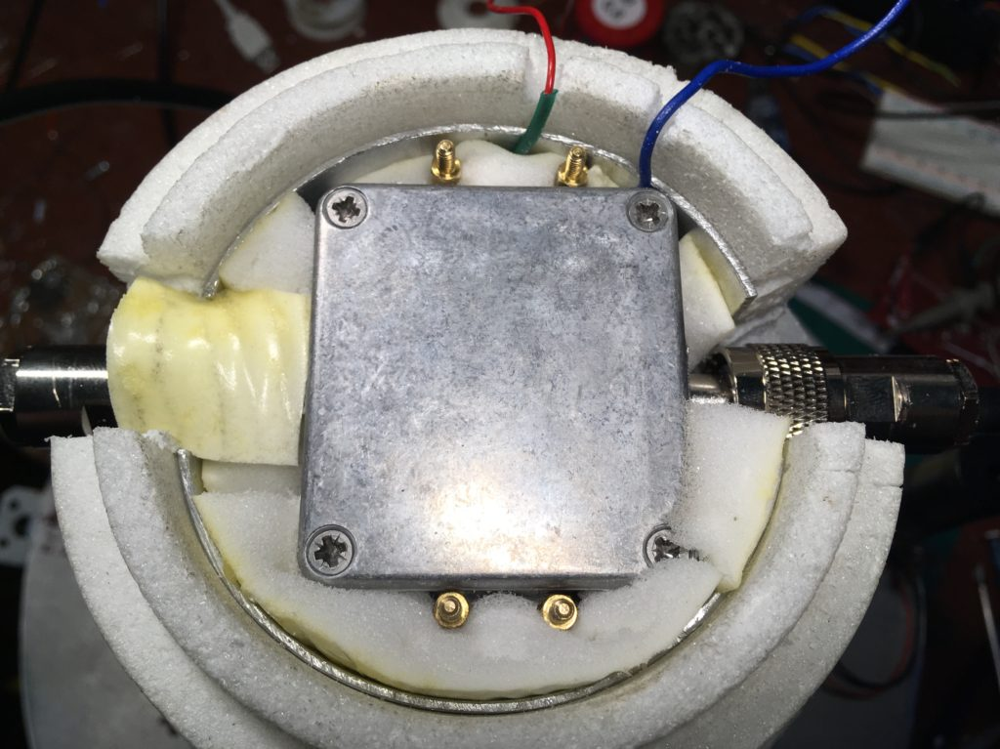 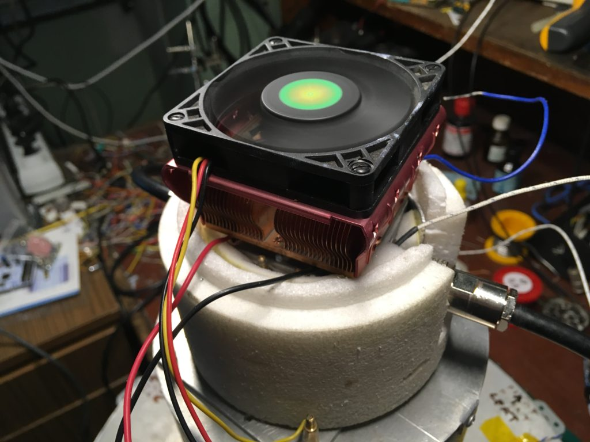Testing of the new system. Receiving a noise-like signal from the Moon.
Please enable the English subtitles in the video.
{kind=link}
{kind=link}
Thanks for reading!
I had an unusual case last week with a filter and LNB at 1420MHz from Amazon.
I ordered it because of the good customer reviews.
He came to me with a broken shielded cover.
I already wanted to return it with a request to exchange it for the same one, but undamaged, but I saw that there was no filter under the lid!
It’s a simple broadband LNB!
I phoned Amazon support service, they said that the seller is not they, they have a warehouse.
Probably someone bought it before me, opened the lid and saw that there was no filter, returned it back to the warehouse, and they sent it to me!)
I returned it back to Amazon and get your money back.
Amazon is a very reliable platform, they are always correct with buyers for all problems!
Here is a photo of what I received.
https://ibb.co/3FtgW0x
https://ibb.co/TRwwyk8
https://ibb.co/pbR8LDJ
Perhaps such information will be useful to someone.
I do not understand way this device without a 1420 MHz filter has good customer reviews.
Lovers of radio astronomy probably did not check this device with measuring instruments, for the presence of a filter in it.
I would, too, never opened it and checked it.
It’s good that I got it with the lid open.
Hello. I believe that the IC3 component is LTCC filter. So everything should be fine here.
Got it, thanks! I overlooked!
It looks like an SMD transistor or microcircuit.)
Well, that means good, so I can order LNB with a filter again on Amazon! )
I was shocked that the device came mechanically broken.
After that, I opened my filter to make sure there was something in it.
Here’s what a 1420MHz passive filter looks like from the inside with Aliexpress.
There the filter is immediately visible! 🙂
https://ibb.co/NFFvqRH
Спасибо за очень интересную разработку! Есть пара вопросов:
– как Вы боретесь с конденсатом при охлаждении усилителя?
– какой ламинат использован для PCB?
Боролся в основном с помощью пакетика силикагеля внутри корпуса + тщательная просушка и продувка корпуса горячим воздухом перед закрытием корпуса.
Материал – обычный FR4, он на 1.2 ещё в целом более-менее работает. Не идеально конечно, но взять условный Rogers тогда не было возможности.